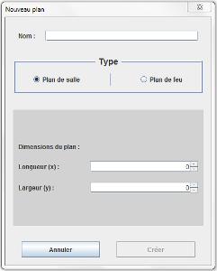
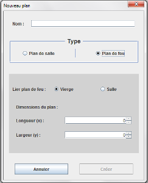
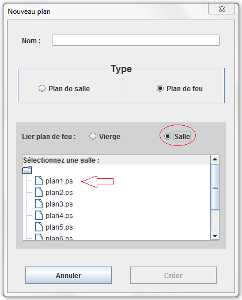

Pour créer un plan, cliquez sur le menu Fichier, puis sur Nouveau ou sur le bouton Nouveau en bas du menu de gauche contenant les arborescences.
Une boîte de dialogue va ensuite s'ouvrir :

Vous devez saisir le nom du plan (obligatoire). Il est ensuite possible de choisir entre éditer un plan de salle ou un plan de feu.
L'image ci-dessus vous montre l'édition d'un plan de salle. Vous pouvez y entrer les dimensions du plan (une taille par défaut sera utilisée si vous n'entrez rien).
Si vous souhaitez créer un plan de feu, cliquez sur le bouton plan de feu, vous verrez alors apparaître ceci :

Il vous est proposé de lier le plan de feu à un plan de salle déjà existant ou bien de créer un plan de feu vierge, au quel cas vous pouvez entrer les dimensions du plan de feu (dimensions par défaut si non rempli).
Si vous choisissez de lier le plan de feu à un plan de salle déjà existant, sélectionnez le bouton Salle :

Choisissez ensuite le plan de salle auquel vous voulez le lier dans l'arborescence.
Pour terminer, cliquez sur créer, le nouveau plan apparaîtra à l'écran et vous pourrez ajouter des objets.
Vous pouvez enregistrer votre travail avec le bouton , le plan apparaîtra alors dans le menu de gauche, ou bien l'enregistrer dans votre répertoire personnel en cliquant sur Enregistrer sous dans le menu Fichier.
Si vous souhaitez supprimer un plan, faites clique-droit sur le plan dans l'arborescence, puis Supprimer.